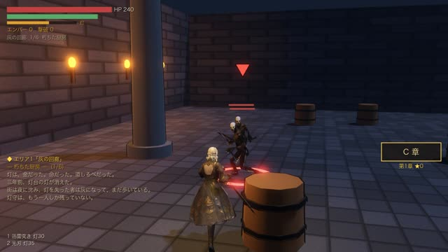
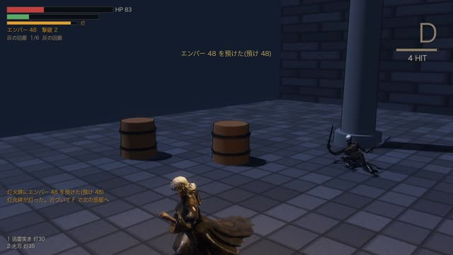
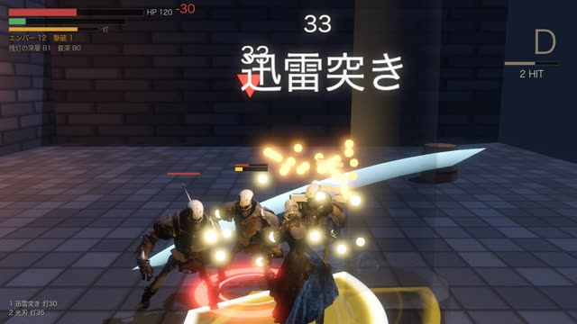

灯は、金だった。命だった。道しるべだった。
三年前、灯台の灯が消えた。
街は夜に沈み、灯を失った者は灰になって、まだ歩いている。
灯守は、もう一人しか残っていない。
灯が消えると、道が崩れる。
最後の灯守ノワが、残された灯を胸に地下城を降りる。剣と灯のアクションローグライト ― iPhone向け・2026年内配信予定

灯は時間と技で減り、尽きた瞬間から部屋の縁が崩れ落ちていく。急ぐか、守るか。回避と一撃で灯は戻る。

敵が赤く光れば避ける。白く光れば構える。構えが決まれば崩し、致命撃、打ち上げて空中へ。

ボスの先に「残灯の深層」。日替わりの深層、才能と装備の合成、どこまで降りたかのランキング。
灯は、金だった。命だった。道しるべだった。
三年前、灯台の灯が消えた。
街は夜に沈み、灯を失った者は灰になって、まだ歩いている。
灯守は、もう一人しか残っていない。
| タイトル | 残灯(Zantou: Lantern Depths) |
| ジャンル | 3Dアクションローグライト |
| 機種 | iPhone |
| 価格 | 基本無料。「灰の回廊」全8章とボス、三つの結末、日替わりの深層、残灯の深層B10まで遊べます。買い切りの「灯の継承」で深層B11から先・ねじれ城が開き、広告なしで報酬を受け取れます。ほかに灯晶パック・月札などのアプリ内課金があります(スタミナ制なし) |
| 発売 | 2026年内(日程は調整中) |
| 開発 | 個人制作 |
プレスキット(動画・画像・資料)は準備中です。レビュー用コードは X のDMでご連絡ください。